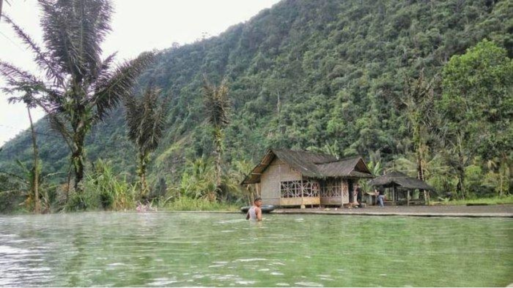
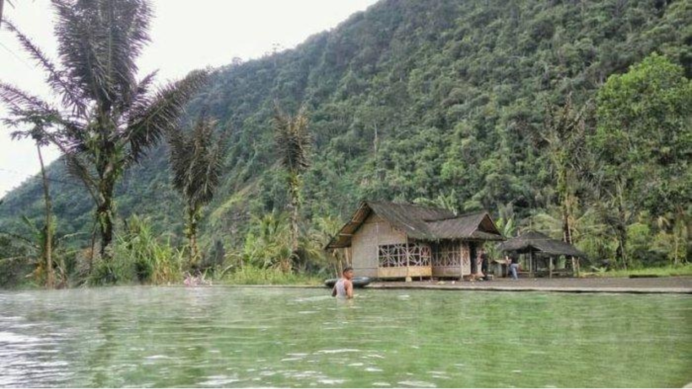

Post by TasikTour
Tee Jay Water Park merupakan salah satu objek wisata buatan pavorit di wilayah Priangan Timur. Kawasan yang memiliki luas kurang lebih ada 2,8 hektar ini memiliki tiga wahana kolam permainan, salah satunya adalah kolam sensasi ombak yang menjadi primadona pengunjung. Objek wisata yang didukung oleh 60 personel petugas yang siap melayani pengunjung ini dibuka dua hari setelah lebaran, objek wisata ini dipadati pengunjung yang datang dari berbagai kota di Jawa Barat.
Wahana TeeJay Waterpark yang terletak di area Mall Plaza Asia di Jalan HZ Mustofa no 326 Tugu Jaya Kecamatan Cihideung Tasikmalaya Jawa Barat. Lokasinya yang berada di tengah kota membuatnya mudah untuk dijangkau. Seperti namanya TeeJay Waterpark adalah wisata yang berhubungan dengan kolam renang. Wisata berenang di tempat ini merupakan salah satu yang direkomendasikan untuk para pemburu wisata. Penasaran dengan wahana apa saja yang terdapat di wisata wahana TeeJay Waterpark Tasikmalaya? Simak terus artikel ini, selain informasi, juga ada foto-foto TeeJay Waterpark.


 

Di bagian luar TeeJay Waterpark terdapat patung-patung binatang yang mencerminkan wahana bermain anak. Juga ada kolam bebek dan kandang rusa dengan rusa tutulnya.
Lahan parkirnya yang luas membuat tempat ini nyaman bagi para pengunjung yang membawa kendaraan.
Demikianlah informasi Wisata Wahana TeeJay Waterpark Yang terletak di area Mall Plaza Asia Jl. HZ Mustofa 326 Tuguraja Kecamatan Cihideung Kabupaten Tasikmalaya Jawa Barat 46125. Semoga artikel ini menjadi salah satu referensi bagi Anda yang mencari lokasi wisata hiburan bagi anak dan keluarga.
Sung Jinwoo
Artikel ini benar-benar menyoroti keindahan dan keragaman Swiss. Dari Geneva hingga Zurich, setiap tempat memiliki pesona uniknya sendiri. Sangat menarik untuk membaca!
Kirigaya Kazuto
Saya terkesan dengan deskripsi mendalam tentang Brienz dan Montreux. Sungguh menggambarkan betapa mempesonanya alam di kedua tempat tersebut. Saya merasa seolah-olah saya sedang berada di sana!
Aomine Daiki
Bagian tentang Rhine dan Jungfraujoch sangat informatif. Membaca tentang petualangan sungai dan pendakian gunung membuat saya ingin segera merencanakan perjalanan ke Swiss!